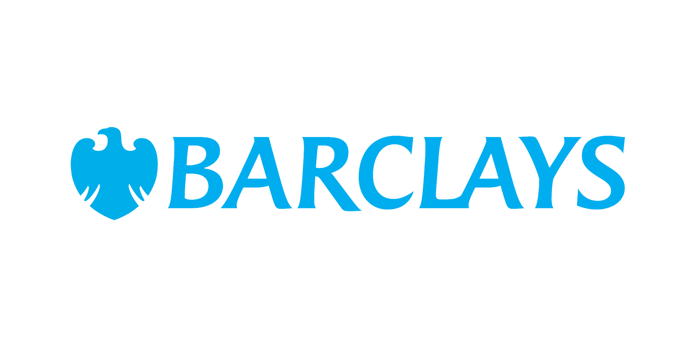
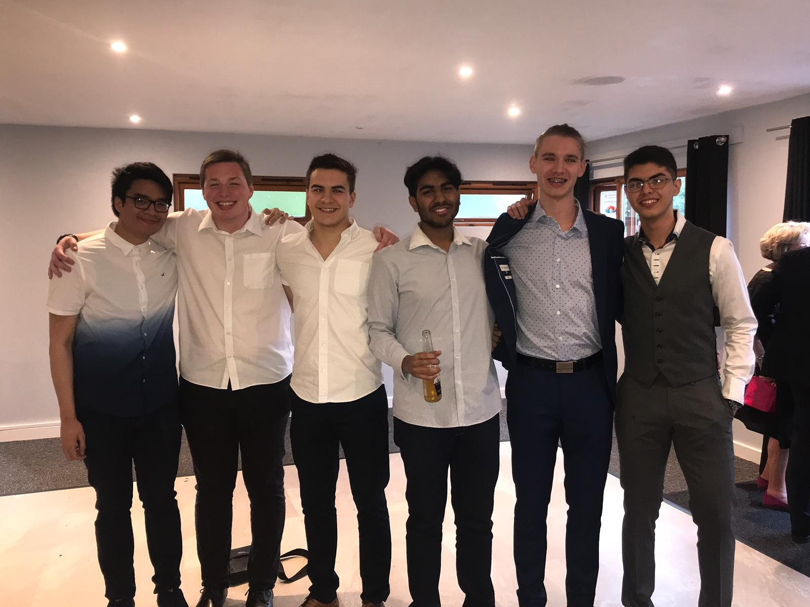
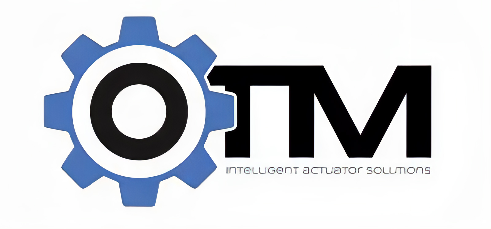
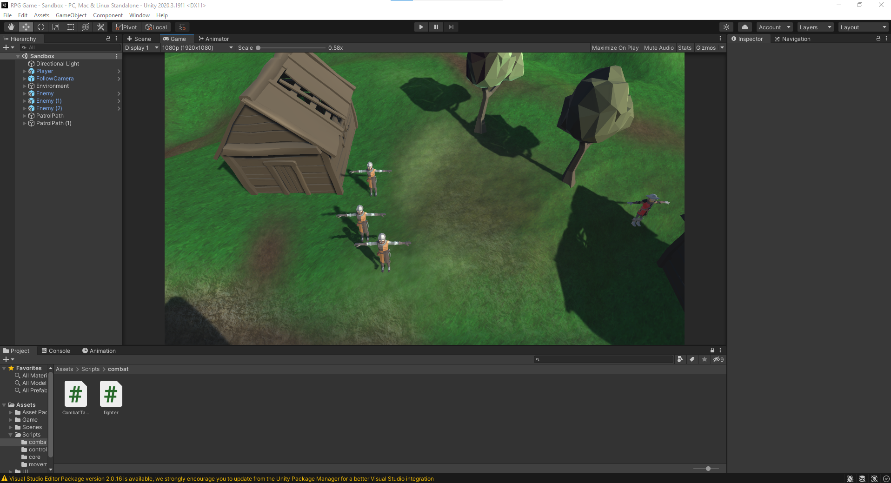
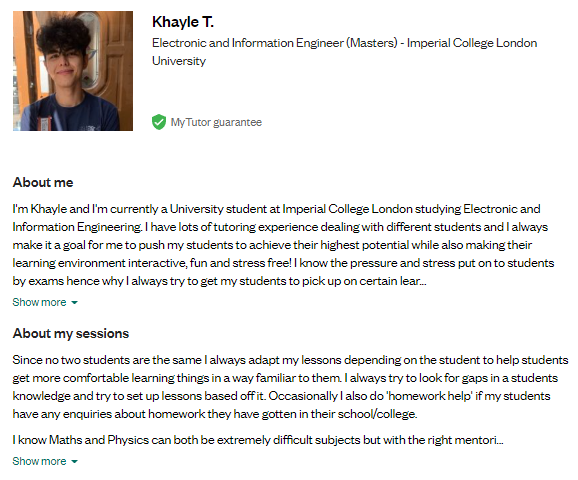
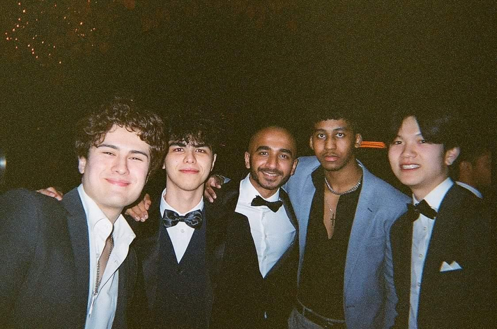

Hi! I'm Khayle Torres
About Me

As a Software Engineer I work on many different projects ranging in size and complexity allowing me to learn, adapt and thrive to challenge thrown at me and also work perfectly in a team environment.
Skills
Web Development
Consulting
Branding & Identity
Graphic Design
Timeline
2016
Barclays (Work Experience)
At this point in time I was not quite sure what field to pursue so applied for a work experience for Barclays in Feltham.
During this time I assisted customers in their transactions and also customer support. I also shadowed the employees in order to gain
a better understanding of how the company infrastructure works.
Although I was not particularly keen into going into the Finance industry I was able to learn better communication and also being able to interact and handling different customers which was very valuable experience.
Although I was not particularly keen into going into the Finance industry I was able to learn better communication and also being able to interact and handling different customers which was very valuable experience.
2017

A-Levels (St Pauls Catholic College)
At Secondary School I attended St Pauls Catholic College (Sunbury) in which I was able to achieve the third highest overall grades
in. I picked Maths, Further Maths and Physics as I always loved scientific/STEM related subjects and knew I wanted to go the scientific route.
During my time at St Pauls I was also a mentor for the years below giving tips on revision, handling exam stress and preparing for University applications. I was also able to achieve the Edexcel Level 3 Algebra Award with a mark of 87/90.
During my time at St Pauls I was also a mentor for the years below giving tips on revision, handling exam stress and preparing for University applications. I was also able to achieve the Edexcel Level 3 Algebra Award with a mark of 87/90.
2018

OTM Servo (Work Experience)
At this point I was not quite sure as to what Engineering field I wanted to get into however I
did know that I wanted to be an Engineer. I tried to join the Mechanical Engineering company OTM Servo which
allowed me to work on numerous different areas on the development lifecycle of a product.
Throughout this period I was exposed to what it was like to work in a fast paced team environment and was hooked instantly. I immediately realised that out of all the different areas I worked on at the time, I was always found Software fields being the most exciting which I took note of.
Throughout this period I was exposed to what it was like to work in a fast paced team environment and was hooked instantly. I immediately realised that out of all the different areas I worked on at the time, I was always found Software fields being the most exciting which I took note of.
2019
Imperial College London
Although I did not pick Computer Science as one of my A-level subjects I decided not to give up on it. I've used Computers ever
since I was 5 years old and knew that I've always had an interest into anything related to tech. Because of this, I ended up picking
Electronic and Information Engineering as I thought it was an amazing middle ground for both Hardware and Software.
This was an amazing choice as I would share my modules with both Computer Science students and also Electrical Engineering students. Because of this, I have been to take in the best of both courses and also have a deeper and better understanding of Software at a fundemental level. Imperial also allowed me to be certain for my passion for Software and Programming and solidify my career path.
This was an amazing choice as I would share my modules with both Computer Science students and also Electrical Engineering students. Because of this, I have been to take in the best of both courses and also have a deeper and better understanding of Software at a fundemental level. Imperial also allowed me to be certain for my passion for Software and Programming and solidify my career path.
2020

Game Development
I've decided to learn Game Development in my spare time at Imperial as a hobby. I took up a couple of Youtube and Udemy courses
including 2D and 3D Game Development in Unity and a little bit of unreal Engine. This allowed me to sharpen both my C++ and C# skills
and also adapt a different way of thinking for fields I'm not familiar with (e.g., 3D modelling, music, UI/UX, design, etc..).
I also reguarly team up with other Game Developers, Pixel Artists and Music Composers from time to time to try to create games for fun GameJam competitions.
I also reguarly team up with other Game Developers, Pixel Artists and Music Composers from time to time to try to create games for fun GameJam competitions.
2021

Remote Academic Tutor
During my time at Imperial I decided to take up a Remote Academic Tutoring job. As I knew the stress and
struggles of going through the exam period of A-Levels I wanted to help guide some of the younger students through their A-Levels
similar to how I've done when mentoring in Secondary School.
I took up a job as a Remote Academic Tutor at MyTutor.co.uk which I was then able to help tutor and mentor multiple students in both A-Levels and GCSEs.
My tutoring primarily consisted of scientific subjects as it is my most proficient fields however I was also open to tutoriing other non-scientific subjects. I enjoyed seeing the improvements of all my students and the gradual increase in effort and interest each of them would bring to my lessons as time went on.
I took up a job as a Remote Academic Tutor at MyTutor.co.uk which I was then able to help tutor and mentor multiple students in both A-Levels and GCSEs.
My tutoring primarily consisted of scientific subjects as it is my most proficient fields however I was also open to tutoriing other non-scientific subjects. I enjoyed seeing the improvements of all my students and the gradual increase in effort and interest each of them would bring to my lessons as time went on.
2022
Software Engineering (Industrial Placement)
During my applications for a 6 month industrial placement I applied to a company named THG which is a British e-commerce retailer.
I applied and was hooked upon my first interaction with the team. I decided to pick THG as I was told it would be Research
and Development in a mostly Full-Stack Software field. I was hooked as I knew I would be able to experience what it would be like to
research, develop and maintain code that could potentially have a significant impact on the company. I also wanted to challenge myself
as I have never done any full-stack development and loved learning new concepts and skills to improve my Software Engineering skills.
At my time at THG I was able to learn new frameworks such as Vue.js, Nuxt.js, Tailwind CSS, AWS Cloud, Calibre, Kubernetes and many more which allowed me to broaden my knowledge and become a better Software Engineer. I was also able to experience what it would be like to work in a team environment as a Software Engineer. This is because from the very beginning it was made clear to me that although I would be helped initially, I would be treated no different than any of the other regular Software Engineers in the team. This was amazing experience and I am very grateful to have met such an amazing team who have mentored me and have also made my Internship an amazing experience.
During my internship I was also able to work on a subsection of work called Prefetching which was able to improve some of the Product List page load times by up to 6x. Due to this improvement I was able to demo my work to the CTO of THG Schalk Van De Merwe which turned out to be a success and is implemented on the live site to date.
At my time at THG I was able to learn new frameworks such as Vue.js, Nuxt.js, Tailwind CSS, AWS Cloud, Calibre, Kubernetes and many more which allowed me to broaden my knowledge and become a better Software Engineer. I was also able to experience what it would be like to work in a team environment as a Software Engineer. This is because from the very beginning it was made clear to me that although I would be helped initially, I would be treated no different than any of the other regular Software Engineers in the team. This was amazing experience and I am very grateful to have met such an amazing team who have mentored me and have also made my Internship an amazing experience.
During my internship I was also able to work on a subsection of work called Prefetching which was able to improve some of the Product List page load times by up to 6x. Due to this improvement I was able to demo my work to the CTO of THG Schalk Van De Merwe which turned out to be a success and is implemented on the live site to date.
2023

Masters in Electronic and Information Engineering
To be continued...
Portfolio
As a Software Engineer I work on many different projects ranging in size and complexity allowing me to learn, adapt and thrive to challenge thrown at me and also work perfectly in a team environment.
Just below are a couple of different projects I've done over the years.